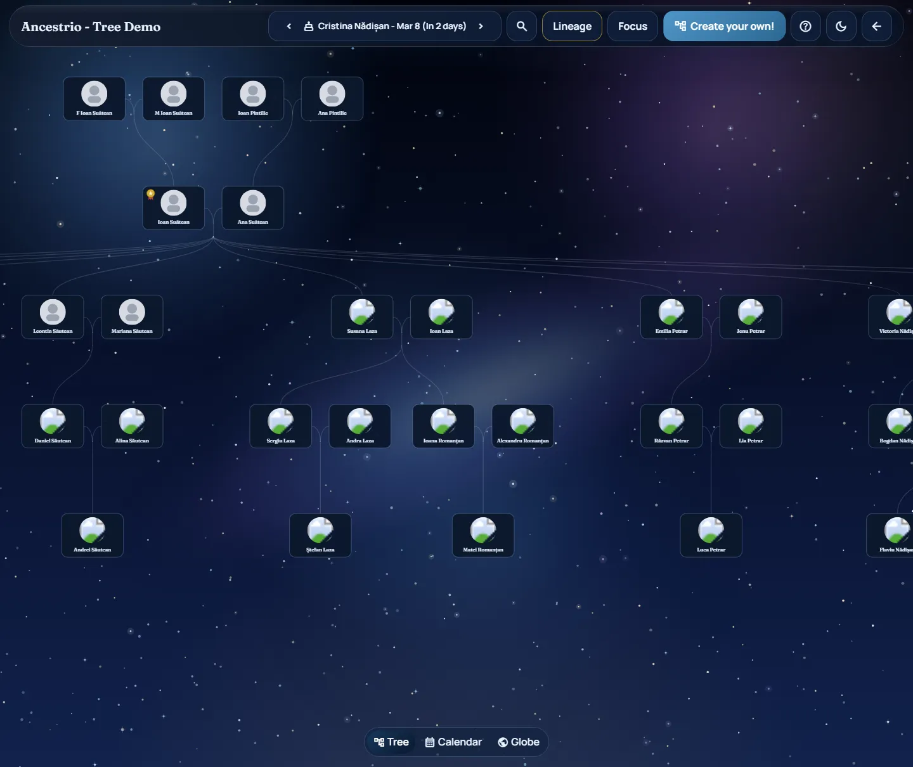

Share controls
Publish only when the details feel ready.
- Keep the workspace private while you verify branches.
- Send one cleaner view link to relatives when it is time.
Family Workspace
Build privately, clean up relationships and dates in one workspace, then share a link or request a printed keepsake without rebuilding the same family tree twice.
Start privately for free. Printed keepsake requests begin at €69 once the tree is ready.
Workspace Preview
Live tree
Share controls
Print preview


Review checklist
01
Start with your own workspace and add people, dates, and notes before anyone else sees the tree.
02
Use the tree, calendar, and place views to clean up the story before it spreads across family chats.
03
Relatives can view the same tree without needing the editor or a new account flow.
04
Come back for paper, finish, size, and proof confirmation after the digital tree feels settled.
Choose Your Path
Ancestrio works as a balanced brand site: you can inspect the product in the demo, begin a private workspace, or jump straight into the keepsake request flow.
Explore the demo
Browse the public demo to understand how relatives will experience the finished tree without touching your own data first.
Open DemoStart a private workspace
Use an account for cloud sync or guest mode for a local-first draft while you sort names, dates, places, and relationships.
Start BuildingOrder a keepsake
Choose the print style, paper finish, and size once the tree feels stable enough to move from workspace to proof.
View StoreCredibility
The product asks families to trust it with personal history, so the homepage should answer the obvious trust questions before anyone starts.
Private by default
Tree sharing stays opt-in. You make a tree public only when you are ready to send the link.
Open source
The project is available on GitHub so the product direction and implementation stay inspectable.
No ads or analytics
Ancestrio does not run third-party advertising or analytics scripts on the site today.
Real relationship patterns
The public tree uses real relationship patterns so the viewer reads like an actual family record instead of sample filler.
Workflow
The private workspace, shared viewer, and print handoff are meant to feel like one connected system instead of three separate tools.
Track spouses, children, and side branches without collapsing into spreadsheet cleanup.
Catch missing dates and upcoming reminders while the tree is still in a controlled draft state.
Origin stories and travel notes stay tied to the same people instead of living in separate documents.
One source
Stop stitching together folders, screenshots, and email notes. The same tree powers the private editor, the shared link, and the printed keepsake request.
Shared view
Anyone with the link can inspect the tree without learning the editor first.
Print request
Style, finish, and size choices happen after the family story is already structured.
Product
Ancestrio works best when the tree is still changing. The workspace helps you clean it up, share it later, and only then turn it into a keepsake.
Viewer
Switch between the visual tree, upcoming birthdays, and location context without losing the thread of the family story.
Editor
Adjust dates, relationships, and notes in one place while the workspace is still private.
Sharing
Family members who only need the finished result can stay in the read-only view.
Keepsakes
Choose a style and confirm the proof after the digital version feels stable enough to frame.
Printed Paper Styles
The print offer is still here, but it now sits inside a clearer product story: organize first, then decide how formal the keepsake should feel.
Best first print
Classic
Balanced typography and safer framing for the first version most families will want on the wall.
Most ceremonial
Ornate
Richer framing and more visual ceremony for a keepsake that is meant to read as an event piece.
 Most restrained
Most restrained
Minimal
Cleaner spacing and lighter ornament for a quieter display that still carries the whole family structure.
Who It Helps
Ancestrio is designed for people who need a family record they can research, review, share with relatives, and eventually turn into something tangible.
Family historians
Dates, relationships, notes, and locations stay in one place while the tree is still being verified.
Reunion organizers
Relatives get a cleaner tree view while you keep the builder and corrections behind the scenes.
Gift planners
When the story feels finished, move straight into style selection and proof confirmation for print.
FAQ
These answers match the product behavior and policies already present across the workspace, store, privacy, and terms pages.
No. Trees start private, and you only make them public when you want to share a link with relatives.
Yes. Guest mode keeps the draft local to your browser so you can test the workflow before signing in for cloud sync.
No. Relatives can view a public tree by link without needing the editor or a separate account flow.
You own the family tree data you provide. Ancestrio stores it so the workspace, viewer, and keepsake flow can use the same record.
You choose the style, paper finish, and size, then submit a request. Proof and delivery timing are confirmed by email before anything is printed.
No. The current store flow captures requests only, and online payment is not processed in the app.
Ready To Begin
Start with the private workspace now. The print flow stays available when the family story is settled enough to keep.